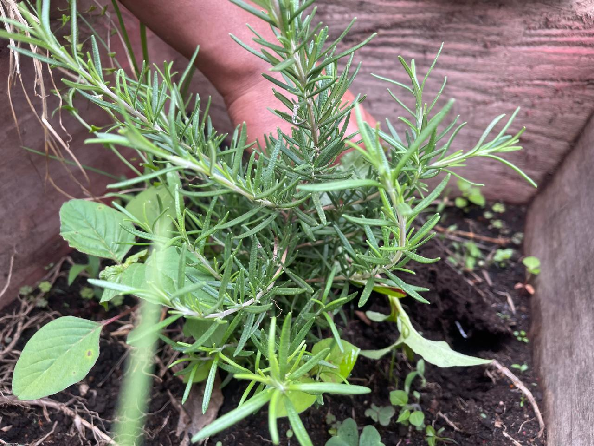

El Juego del Tl
Un espacio para aprender sobre nuestras plantas medicinales
Mi Biblioteca
Audiovisual
Descubre las plantas medicinales, sus características y sus usos.
Explorar biblioteca →
Empieza a
Aprender
Cultiva, cosecha y descubre los secretos del Tul.
Entrar al juego →Aprende, cultiva y conserva el conocimiento de nuestros mayores.